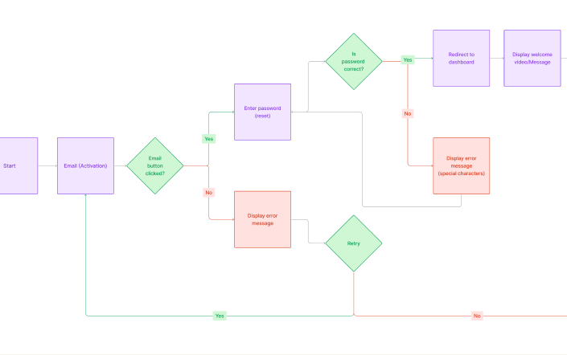
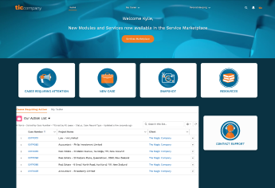
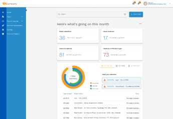
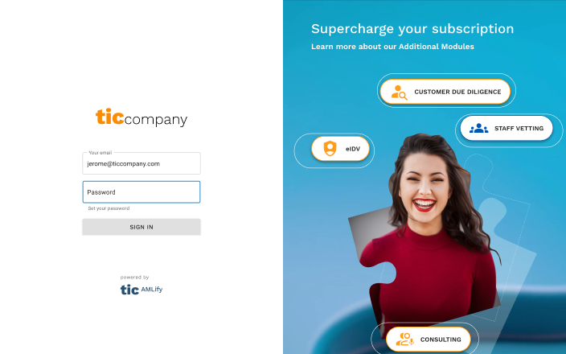
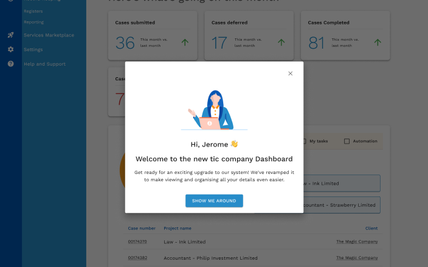

Context & challenge
TicCompany is a marketplace connecting professionals and organisations. Its QA (quality assurance) journey was fragmented — users struggled to verify skills, share insights, and find meaningful learning pathways. The gap wasn't a missing feature, it was clarity, trust, and a visible sense of progression. Without a coherent experience across QA and professional profiles, engagement had plateaued and perceived value was diminishing.
Role & contribution
Lead designer, working with Jerome Cookson (Chief of Revenue and Product at the time), Jerry Li (Software Engineer), and Mary Kim (Product Manager). I defined the UX vision in partnership with product leadership, scoped the QA ecosystem as a strategic differentiator, led research and interface design, and partnered with engineering on technical feasibility.
Research & insights
Combined stakeholder interviews (business goals), user feedback (motivations and pain points), and competitor analysis (positioning gaps). Four patterns surfaced.
The reframe that followed: QA wasn't a feature, it was part of a professional's identity on the platform.

Solution
Redesigned the client dashboard, remapped the QA and profile information architecture to fix the navigation-predictability problem, redesigned the login experience, and introduced a "What's New" welcome page surfacing system updates to returning users.




Status
Shipped. No outcome metrics available for this project.
Reflection & learnings
Trust turned out to be a UX artefact, not just a backend metric.
Models of progression need to be visible and motivating, not just present. Emotional clarity, not just functional clarity, is what drove repeat engagement. A future iteration could explore AI-assisted recommendations pointing users toward QA improvements based on their specific skill gaps.